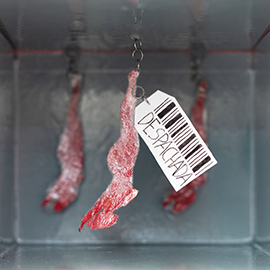

‹
›
Causa Retórica é um projeto da cadeira de Expressão Gráfica. O desfio era utilizar diversos materiais
e desenvolver uma imagem gráfica que retrata-se uma causa social. O tema escolhido foi o tráfico das
mulheres.
Para a construção foi utilizado o programa Photoshop.
Graphic Image
